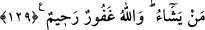

129. Göklerde ve yerde ne varsa Allah’ındır. Dilediğini bağışlar, dilediğine azap
eder. Allah, çok bağışlayıcı ve çok merhametlidir.
“Göklerde ve yerde olanların hepsi” yaratma ve sahip olma açısından “Allah’ındır.”
Bu varlıklarda kesinlikle hiç kimsenin rolü yoktur. O, hikmete ve kulların maslahatına
mebnî bir şekilde bağışlamak istediklerini bağışlar. Azap etmek istediklerine de azap
eder. Âyette önce mağfiretin zikredilmesinin sebebi, Allah’ın rahmeti gazabından önce
olduğu içindir.
Âyet-i kerîme, azap etmenin vacib olmadığını açıkça göstermektedir. Azabı tevbeye
veya tevbe etmemeye bağlamak, azabın mutlaka olacağı fikrine zıt düşmekte gibidir.
“Allah,” kullarını “çok bağışlayan çok esirgeyendir.” Bu sözün maksadı: Allah’ın
kullarına bütün bu seçeneklerdeki muameleleri –aslında güzel olmakla beraber–
Allah’a vacib olmadığı, sırf fazl-u kereminden rahmet ve mağfiretinin baskın olduğunu
beyân etmektir.
Akıllı kişiler, Allah Teâlâ’nın kendilerine rahmet etmesini gerektirecek amellere
koşmalı; O’nun rahmetinden ümid kesmemelidirler. Çünkü, Allah’ın rahmetinden ancak
kâfirler ümid keser.
Allah Teâlâ, Dâvud (a.s.)’a şöyle vahyetmiştir: “Ey Dâvud! Günahkârlara müjdele,
sıddîkları korkut!” Dâvud:
“Yâ Rab, nasıl olur da sıddîkları korkuturken günahkârları müjdelerim?” diye
sorunca, Cenâb-ı Hak:
“Günahkârlara, bana hiçbir günahın büyük gelmeyeceğini, bütün günahları
bağışlayabileceğimi müjdele! Sıddîkları de işledikleri güzel amelleri beğenmekten
korkut! Adâletime ve hesabıma göre muamele ettiğim herkesi de helâk ettiğimi bildir.”
Ömer (r.a.)’in şöyle anlattığı rivâyet edilir:
“Hz. Peygamber’in huzûruna girdim. Onu ağlar bir vaziyette buldum. “Yâ Rasûlallah,
sizi böyle ağlatan nedir?” diye sorunca Hz. Peygamber: “Cebrâil bana haber verdi ki,
Allah Teâlâ: “Müslüman olarak ihtiyarlayan birine azap etmekten hayâ ederim. Peki,
müslüman olarak yaşlananlar, bana karşı gelmekten niye utanmaz?”[108]
İhtiyar insanlara düşen, Cenâb-ı Mevlâ’nın bu yüce kereminin kadrini bilip O’na
şükretmek, Allah’dan korkarak ve kirâmen kâtibinden utanarak mâsiyetlerden itâata
yönelmektir. Çünkü yaşlı insanlar, ihsân denizinin sahilinde bulunmaktadırlar.